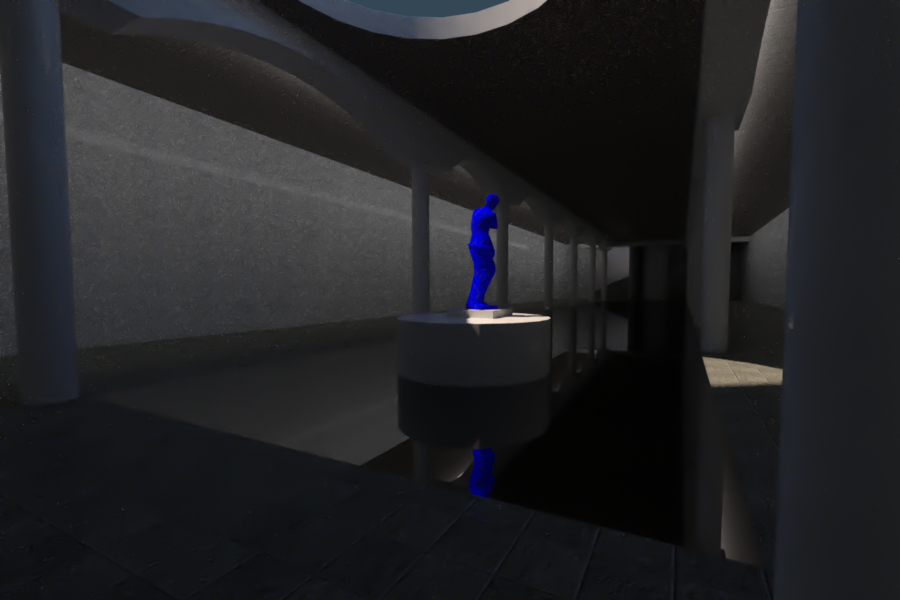
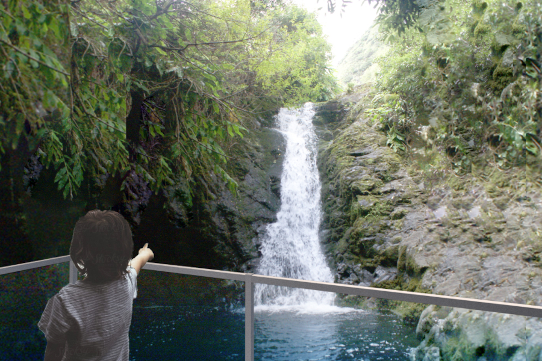
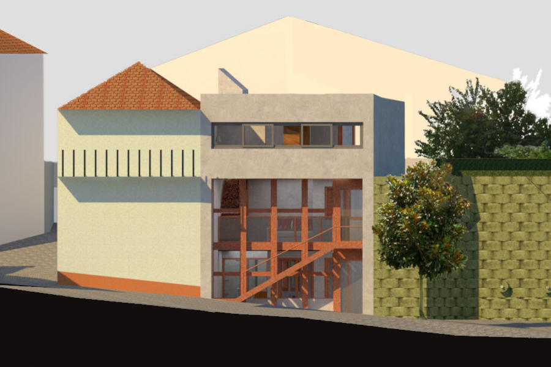
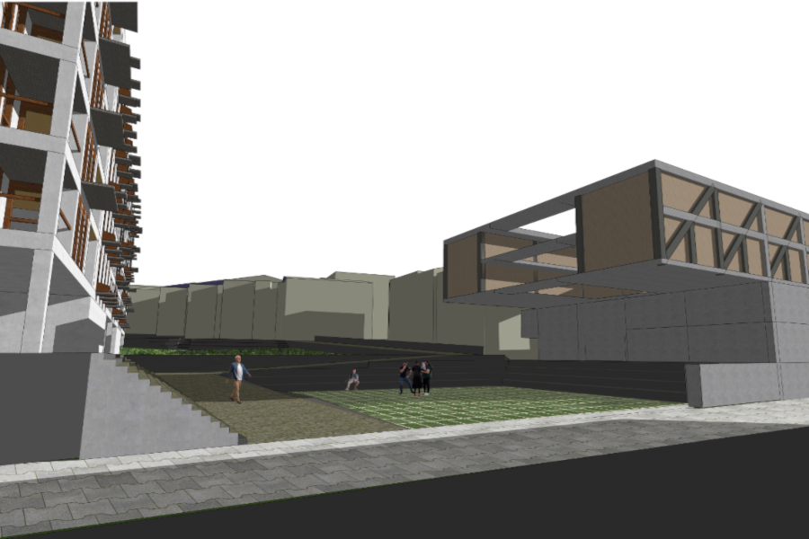
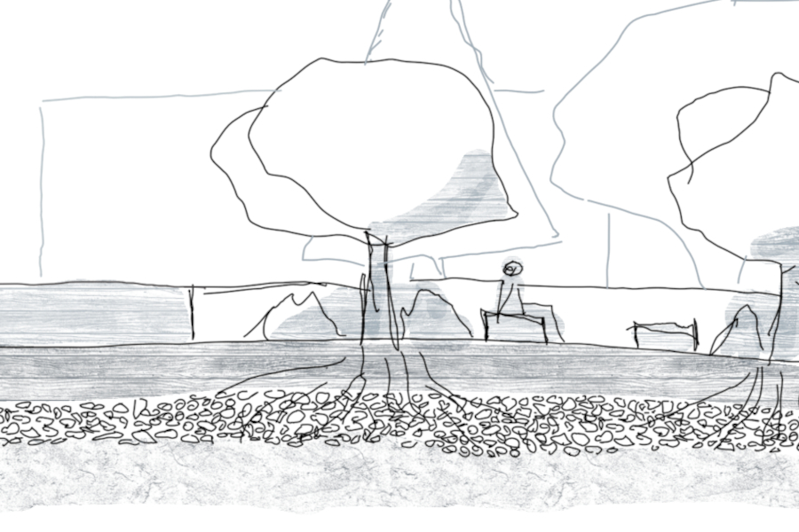
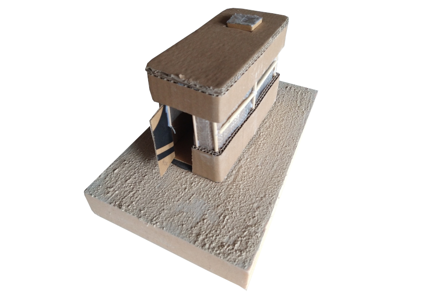
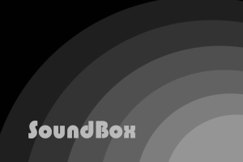
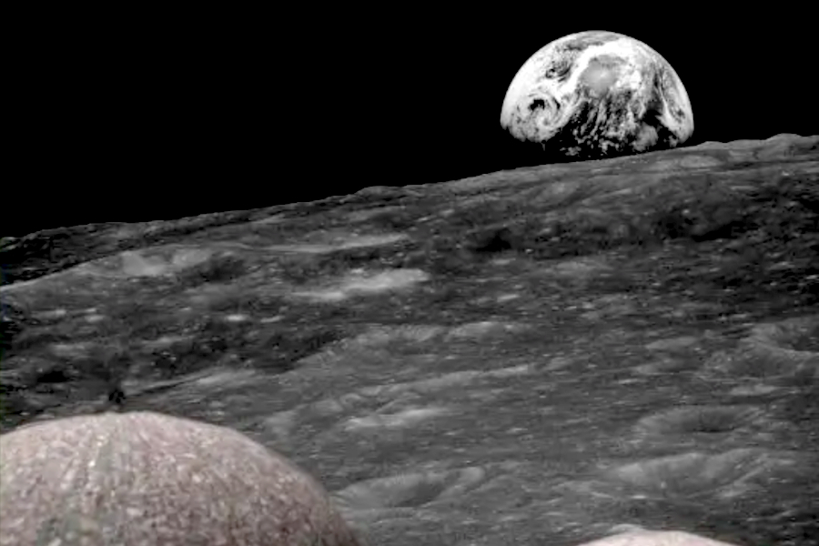

🔗 Underground art gallery beneath a proposed square, developed as part of a new urban infrastructure in Trancoso. Free from economic constraints, the project sought to maximize the sensory and visual experience of its users, prioritizing spatial quality and artistic engagement. 2024
Group: André Andrade, Débora Barros, Roberto Pereira 🔗
🔗 Bench built with local natural materials using adobe and earthen plaster technique made in situ, hugging a beautiful tree ❤️. Near building K4 in Technical University of Crete, Chaniá, Greece. Scanned with Polycam June 14 2025, circa 4 pm Greece time.
Group: André Andrade, Catarina Viegas, Sidar Timurturkan, Yaren Tanriverd 🔗

🔗 4 stage Earthen Tower with base structure made out of wood, as an artistic meeting point inside of Trancoso's castle, Portugal. Part of Trancoso's call to Design. Late 2023.
Group: André Andrade, Débora Barros, Roberto Pereira. 🔗

🔗 Educational bridge connecting knowledge and people, as an extention facility for Museu dos Lanifícios, Covilhã, Portugal.
Part of Luiz Conceição Challenge, 2022. 🔗

🔗 First attempt at rendering in my academic life. Lodging for 2 artists for them to create art in an 5m tall area. Featuring Bordalo ii's art in Fundão and Muye. Late 2021, Covilhã. 🔗

🔗 Seeking to maximize the amount of public space available, both buildings are elevated above ground level. The lodging complex (the smaller of the two) was intentionally shaped to provide shade during the scalding summer days, as temperatures in Fundão often exceed 40°C on multiple days each year. 🔗

🔗 Landscape rehabilitation of Stavros, Town were Zorba the Greek was filmed with minimal & pontual (primary) and linking (secundary) interventions.
Group: André Andrade, David Romero, Joel Gras. 🔗

🔗 This project occurred in a town where art is buried in graves. Aimed to create a small scale ritual place capable of lodging 4 artists seperatly, utilizing the local frontier cabins on the spot, to foster the graving act (the artist has to fell like in between the domains of art's life and death). 🔗

🔗 Video as a project and argument in favour of a different aproach to Architecture. Video sources from local footage & master Nicolas Bras that got me inspired on his music. 🔗

🔗 While in high school, my group in physics got a challenge from ESA (European Space Agency) to design an encampment on the moon. We didn’t have knoledge on about anything, but tried our best to deliver. Got the role on approach sketches and modeling on the required software, Fusion 360.
Group: André Andrade, Bruno Faísca, Luis Pinto, Pedro Gonçalo, Rodrigo Serra. 🔗

🔗 Best while listening to GoGo Penguin - Fallowfield Loops. Taken from an old Pentax K-30 with 30€ 100-200mm 2nd hand lens.🔗

🔗 Maquettes of Boats I made before entering University in a time whene I though Architecture would open doors to enter Naval Architecture or Ship's drawing/construction industry... 🔗


{kind=link}
{kind=link}
{kind=link}
{kind=link}
{kind=link}
{kind=link}
{kind=link}
{kind=link}
{kind=link}
{kind=link}